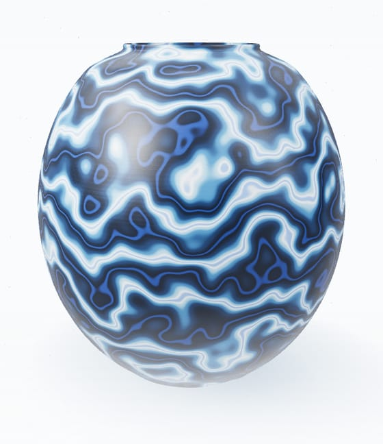

Glaze Kiln
Works in progress! Trying to model glaze interactions after spending 200$ at the pottery store finding the perfect muted glaze.

Data Science · Program Management · Content Strategy
I'm Sasha. I'm fascinated by how intelligence self-organizes. Also, I like to make chaotic puns.
Studio notes
The scenic route to data science — five years spent making complicated things legible.
Now I'm learning to run it myself — pipeline to final chart. Berkeley MIDS, in progress.
hy·phae /ˈhaɪ-fee/ pl. noun
From the wheel
Wheel-thrown clay, marbled in cobalt and ivory. The kiln has opinions; these are the pieces it approved.
I'm learning how to be less of a IG-baddie and more of a SVG.
“Just as there are several solitudes, so there are several silences.”
— Frédéric Gros, A Philosophy of Walking
Selected work
Works in progress! Trying to model glaze interactions after spending 200$ at the pottery store finding the perfect muted glaze.
Data on shark–human encounters, minus the theme music. Read at your own risk.
In Progress
A study habit from China, rebuilt to help my mom learn Mandarin before Duolingo takes my whole inheritance.
The coursework under everything else — notebooks from my UT Austin certificate, documented like someone will actually read them. You're someone.
Background
At Meta, I worked on programs that enabled 50,000+ creators across eight markets, translating between engineers, executives, and everyone in between.
Correspondence
Roles, collaborations, or something stranger. I read everything.